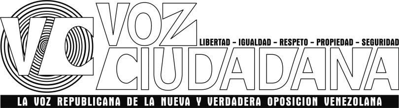

|
 |
|
|
| Bienvenidos |
Desde el Movimiento Republicano
Esperanza (mover), les damos una cordial bienvenida a este espacio a
través del cual expresaremos nuestras opiniones, pareceres,
comentarios, criterios, ideas sobre cualquier tópico, sea nacional o
internacional, que consideremos de interés y provecho para la mejor
formación y entendimiento de la actualidad que nos atañe de manera
directa o indirecta, incluso. Aún y cuando expresamos ser la nueva y verdadera voz de la oposición venezolana, eso no nos excluye del contexto continental, de la misma manera, ello no nos hace ser una voz exclusiva o única; pero consideramos ser verdadera y nueva porque pudiendo ser de edad avanzada o no, no pertenecemos de manera activa o militante, a las organizaciones políticas partidistas de estos tiempos; y lo de verdadera, es porque no participamos de manera explícita o encubierta, del régimen, entendido el régimen como la coalición entre los partidos socialistas democráticos del gobierno mas los partidos democráticos socialistas de la oposición. Tampoco somos un partido, sino un Movimiento de base republicana, por lo tanto, no buscamos votos para ser electos en algún cargo del "estado socialista democrático" y menos participando en esos eventos de compra-venta de votos que llaman las votaciones o elecciones. No buscamos ni su voto, ni su militancia partidista ciega, adoctrinada, sumisa, obediente siempre a todo lo que le mandan u ordenan. |
Somos la nueva y verdadera oposición
por que es a partir de ahora que escucharán nuestras voces, al
natural, lo mas claras posibles, diciendo las verdades de esos
sucesos, de esas cosas, de esos eventos, situaciones, declaraciones,
decretos, leyes y políticas, emanadas desde los diferentes
personajes, cuerpos u organismos de ese régimen que viene
destrozando a Venezuela y todo el continente. Podremos equivocarnos
y quedarnos cortos en las evaluaciones y análisis, incluso hasta en
las verdades que se digan, pero eso no significa que les queremos
mentir, engañar o manipular, tergiversar hechos u ocultarles cosas. Hemos dicho que no buscamos votos porque no somos un partido electoral sino un movimiento por lo tanto, emitiremos lo que consideramos debe ser hecho para que eso sea así, es decir, se mueva, entonces dependerá de quien escuche, si esto se moverá hacia lo que debe ser o no, y si se mueve hacia lo que debe ser, entonces eso debe producir lo que debe producir. Esto es lo que esperamos de Ustedes, esa es su participación, formar parte del movimiento de manera consciente, activa, inteligente, prudente, ciudadana, por lo tanto, debemos saber qué es eso de ser ciudadanos para poder comportarnos como tales, qué es eso de la república para poder reconstruirla debidamente. Bienvenidas sus sugerencias, opiniones, reclamos, aclaratorias, etc., esa interacción debe ser la norma del día a día, no deje de expresarse, de hacer ir su voz, sea hablada o escrita. Es uno de sus derechos mas importantes, el de expresarse libremente.
|
| CONTENIDO | Audios | Videos de interés |
| Quienes somos | Por motivos de seguridad, usaremos pseudónimos: | Ciudadano_01 - Ciudadano_02 - Ciudadano_03 - Ciudadano_04 - Ciudadano_05 - Ciudadano_06 |
| Contacto | vozciudadana @ gmail.com |
| Quienes somos | Contacto |